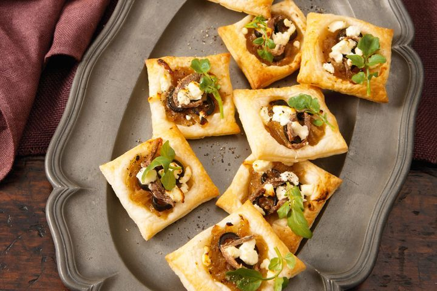

Goat's cheese pissaladiere tarts

Bring warmth and merriment to your next dinner party with these cheerful bites.
Ingredients
- 1/4 cup olive oil
- 6 small brown onions, halved, thinly sliced
- 2 sheets frozen puff pastry, partially thawed
- 16 pitted black olives, thinly sliced
- 16 anchovy fillets, halved lengthways
- 80g goat’s cheese, crumbled
- 32 small watercress sprigs
Steps
- Heat oil in a large heavy-based saucepan over medium heat. Add onion. Stir to coat. Cover. Cook, stirring occasionally, for 12 minutes or until softened. Remove lid. Cook, uncovered, stirring occasionally, for a further 20 to 25 minutes or until golden. Transfer to a bowl. Set aside to cool completely.
- Preheat oven to 220°C/200°C fan-forced. Line 3 baking trays with baking paper. Cut each pastry sheet evenly into 16 squares. Transfer to prepared baking trays. Using a small, sharp knife, score a 1cm border around edge of each pastry square (don't cut all the way through). Spoon onion mixture onto the centre of each tart. Top with olive, anchovy and goat's cheese.
- Bake for 10 minutes or until golden and puffed. Set aside for 2 to 3 minutes to cool slightly. Top with watercress sprigs. Serve.